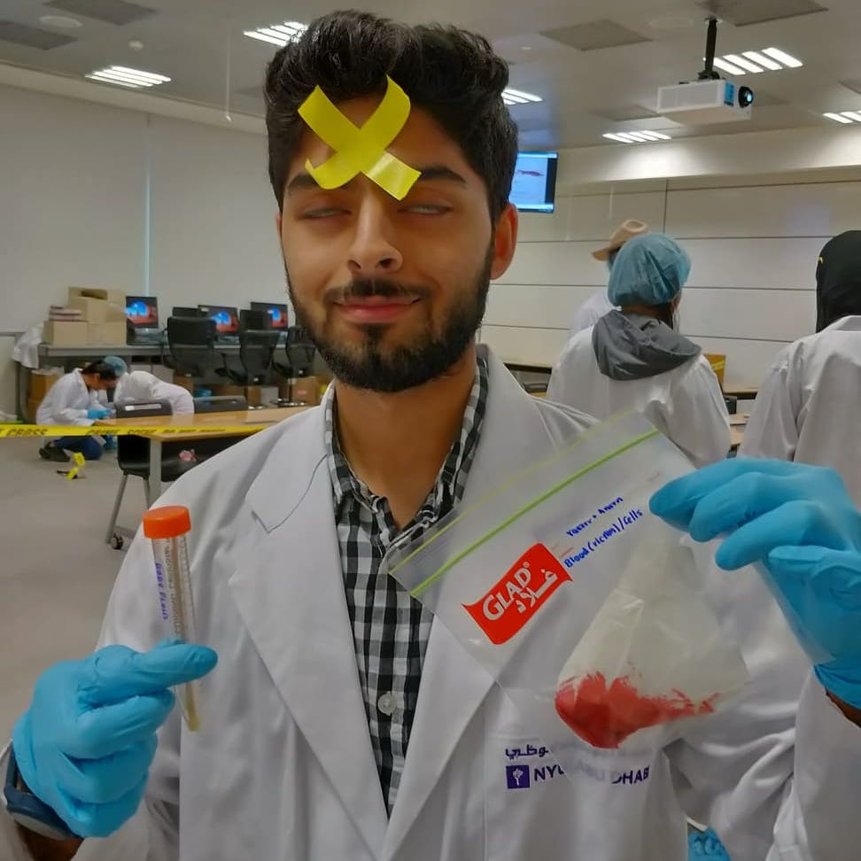
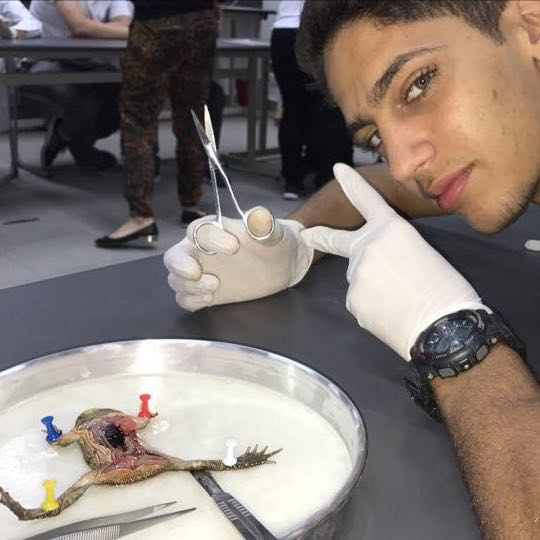

The Crew

Yasser is a cool guy. He likes memes and plays video games. Apparently, he's a thermonuclear astrophysicist now? I didn't even know that was a thing! He gets very defensive when asked to show certification of his lab safety training. He is currently researching about the electrolytic properties of water, he believes that water conducting electricity is a hoax devised by the same people that claim the Earth is a sphere. He is an active member of the Dinosaur Earth Society, as well as the Resident Science Expert for Science Review ©. Contrary to popular belief, he isn't an actual cat. Though one might argue that he indeed is "polite"!

Youssef cut open a frog once to convince his teacher that it swallowed his homework. His homework was stored in a hard disk larger in size than the frog. Needless to say, the frog didn't survive. Youssef found a pair of shiny scissors inside the frog tho. He denies the claim that he stores them under his pillow when he sleeps at night. Youssef often complains about his pillows tearing for some reason. Dr. Yasser accuses Youssef of being biased towards electric heating devices that aren't a microwave oven. Youssef is currently serving his time for murdering a frog by helping Dr. Yasser with his show Science Review ©
"Who is this guy again?"- Everyone watching Science Review (including Yahia himself). Yahia is a g! He stared into his screen while Youssef and Dr. Yasser filmed the first episode of Science Review. Every once in a while, he'd expel air through his nostrils out of pity to our failed attempts at humour. Due to this patronage of his, he was awarded the position of Chief Creative Officer of Science Review ©.
Ramon is a full-time dancer (his favourite dance is the Jarabe Tapatío as you can tell from his...eyes). Sometimes when he's feeling good, he might help produce content for Science Review © or something. He majors in physics cuz he's a masochist. We can confirm he's a masochist by the fact that he's enrolled to "aduit" a summer course. Yeesh!
© Science Review 2020
Except as permitted by the copyright law applicable to you, you may not reproduce or communicate any of the content on this website, including files downloadable from this website, without the permission of the copyright owner.
The Coruscant Copyright Act allows certain uses of content from the internet without the copyright owner’s permission. This includes uses by educational institutions and by Republic and the Galactic Empire, provided fair compensation is paid. For more information, see http://tiny.cc/CopyrightLaws and http://tiny.cc/TragedyDarth.
Did you ever hear the tragedy of Darth Plagueis The Wise? (Click here to win a million bucks!!!)
I thought not. It’s not a story the Jedi would tell you. It’s a Sith legend. Darth Plagueis was a Dark Lord of the Sith, so powerful and so wise he could use the Force to influence the midichlorians to create life… He had such a knowledge of the dark side that he could even keep the ones he cared about from dying. The dark side of the Force is a pathway to many abilities some consider to be unnatural. He became so powerful… the only thing he was afraid of was losing his power, which eventually, of course, he did. Unfortunately, he taught his apprentice everything he knew, then his apprentice killed him in his sleep. Ironic. He could save others from death, but not himself.
The owners of copyright in the content on this website may receive compensation for the use of their content by educational institutions and governments, including from licensing schemes managed by Copyright Agency.
We may change these terms of use from time to time. Check before re-using any content from this website.